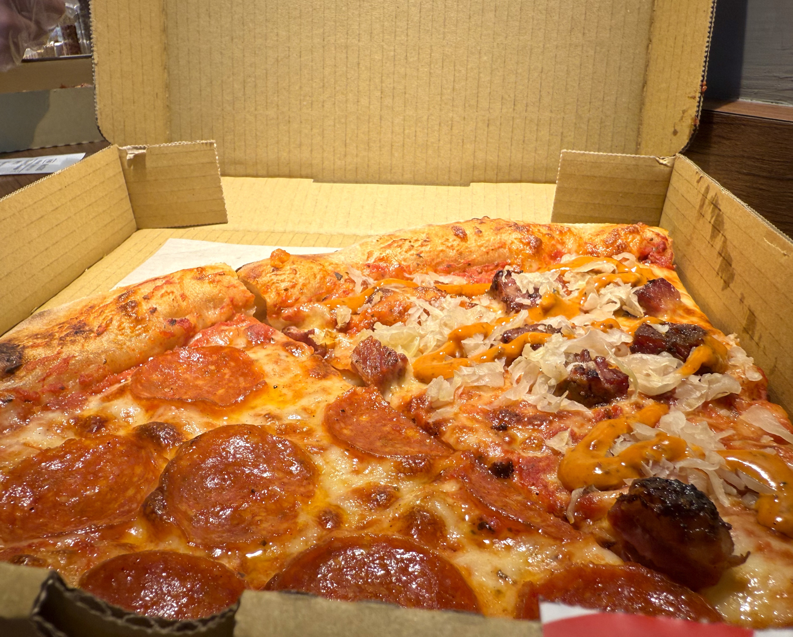

台北有許多披薩名店，其中又以義式窯烤為主流。而位於通化街的The Slice Shop則主打紐約披薩，是不少人心目中的美式披薩神店。它的首家分店五月底在天母開幕，試營運不久便吸引眾多人潮，披薩供不應求，甚至讓店家調整特定口味的預訂方式。
店內空間不大，兩旁設有一排桌面，內用的客人可以在披薩出爐後站著品嚐。怕顧客弄髒手，店家也貼心地提供一次性手套，另外桌上也擺著辣油、辛香料，可以依照個人喜好加上。
The Slice Shop天母店目前販售七種口味，分別是起司、美式臘腸、辣肉丸、松板培根鳳梨、辣楓糖培根、蒔蘿酸黃瓜，以及季節限定的「魯本辣牛」。大多內用的人都點一到兩片享用，各口味價格在130～200之間，若有需要也可以向店家預訂12吋或20吋的完整披薩。

大家覺得披薩是料還是餅皮比較重要？我是覺得都很重要。The Slice Shop的酸種老麵麵團是他們家的招牌，做工複雜，發酵難以掌握，讓他們的餅皮既有脆度又保有嚼勁，是我人生吃過最喜歡的美式披薩口感。這次來吃的口味是美式臘腸與魯本辣牛，美式臘腸就是很經典的紐約風味，點這個永遠不會錯。而季節限定的魯本辣牛是The Slice Shop與在紐約的台式餐廳「886」共同發想，披薩上有起司、燻牛肉塊，撒上886開發的台式辣油混俄羅斯醬，加上德國酸菜，讓味道更加平衡豐富，不容錯過。